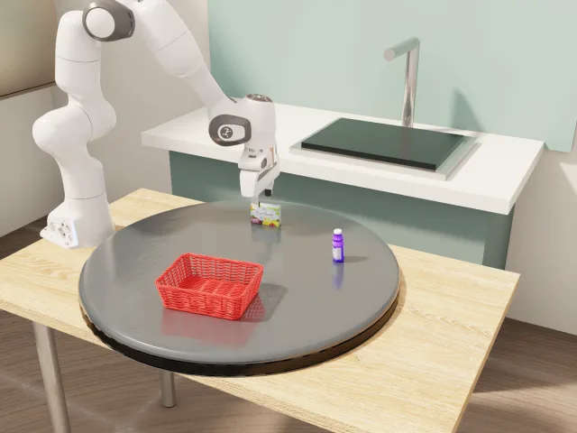

ICRA 2027 · Supplementary Material
MotionForge
A Data Generation Pipeline and Large-Scale Benchmark
for Long-Horizon Manipulation of Dynamic Objects
with Domain Shifts
Dynamic manipulation requires a robot to act while the world keeps changing. MotionForge combines physically grounded target motion and extended interactions with controlled domain shifts and real-time evaluation, exposing the challenges of both generalization and timely action.
MotionForge overview
Overview video · Media placeholder
Construct & validate
A reusable task pipeline turns dynamic interactions into validated demonstrations.
Data generation ↗ 02Shift & combine
Vary object, background, lighting, and speed individually or together.
Domain generalization ↗ 03Keep the world moving
A shared environment clock preserves the effect of policy inference latency.
Real-time evaluation ↗Manipulation in a changing world
From conveyor tracking to contact-induced motion, each scene family contributes ten tasks. The benchmark spans sustained motion, acceleration, abrupt contact transitions, and more complex temporal dynamics.
Factory Conveyor
Track translating targets and coordinate placement into moving receptacles.
Browse scene ↗ CM · 10 TASKSCircular Motion
Time interactions with rotating and orbiting objects.
Browse scene ↗ HT · 10 TASKSHome Tabletop
Respond to falling, rolling, and contact-driven state changes.
Browse scene ↗ EI · 10 TASKSEmbodied Interaction
Coordinate catching, handover, and alignment with moving partners.
Browse scene ↗What causes the target to move?
A physically plausible scene-internal cause connects target motion to the interaction. These bottle demonstrations illustrate the criterion in Table I and Fig. 2.
Prescribed target motion
DOMINO · Adjust Bottle
The bottle follows a prescribed path before the robot grasps it.
DOMINO official demo · Adjust Bottle · Level 1
Fang et al., ECCV 2026 · CC BY-SA 4.0 · Original video
Fall, contact, then roll
MotionForge · HT-001
The bottle falls from a raised surface, contacts the table and rolls before being grasped.
HT-001 · State-machine demonstration · Level 2
Both videos play at their original speed. Causal motion refers to task-relevant target motion with an identifiable, physically plausible cause inside the scene, under our paper's annotation criterion.
Follow the task beyond a single grasp
A task is long-horizon if its reference execution exceeds 8 seconds with at least two ordered manipulation skills, or exceeds 20 seconds with any skill count. Seventeen tasks meet this criterion.

From task design to demonstrations
A two-stage pipeline constructs tasks in Isaac Sim, then validates them and generates trajectories. Reusable assets and manipulation skills support construction; execution feedback guides revisions before data collection.
- 01
Describe
A human specifies the scene, target object, and task objective.
Design prompt - 02
Construct
A coding agent assembles the scene and composes reusable tracking and manipulation skills.
Candidate task - 03
Validate & revise
An examine agent uses rollouts, videos, and logs to check execution across objects and speeds.
Validated configuration - 04
Collect
Run the fixed task with randomized initial states and retain successful trajectories.
Demonstration dataset
Failed validation returns feedback to task construction for revision.
Pipeline details ↗Generated demonstration episodes
Policy training uses 50 demonstrations per task (2K total). The oracle uses simulator state for collection; evaluated policies receive visual observations.
Does the world wait for the policy?
In a dynamic scene, inference takes time while the target keeps moving. MotionForge evaluates every policy under the same R1 environment clock and scheduling rules, preserving each policy’s native inference latency. An action is applied on arrival, to a scene that may have changed since observation.
One factor at a time. Then all four.
Task semantics and the interaction goal stay fixed. Single-factor OOD changes only the object, background, lighting, or motion speed. Joint OOD shifts all four together to evaluate compositional generalization.
Shifted factor In-domain factor
Explore OOD demonstrations ↗| Condition | Object | Background | Lighting | Speed |
|---|---|---|---|---|
| ID | — | — | — | — |
| Object | Shift | — | — | — |
| Background | — | Shift | — | — |
| Lighting | — | — | Shift | — |
| Speed | — | — | — | Shift |
| Joint | Shift | Shift | Shift | Shift |
Dynamic manipulation remains challenging
Seven policies are evaluated with 50 trials per task under R1. Overall success is the equal-weight mean across all 40 tasks. Tables II and III report in-distribution and domain-shift results.
Highest ID success
ACT leads the in-distribution evaluation across 40 tasks.
Highest Joint OOD success
X-VLA leads when all four factors shift; every policy falls below its ID result.
A shared evaluation setup
Identical task conditions and R1 scheduling preserve the effect of inference latency.
In-distribution success
ACT achieves the highest in-distribution success rate among the evaluated policies.
Macro-average over all 40 tasks. Default R1 execution protocol.
Full results table
| Policy | ID | Lighting | Object | Background | Speed | Joint |
|---|
Look closer at every task
Browse full demonstrations and inspect individual success rates. Videos show state-machine demonstrations; policy performance is reported in the results tables.
In-distribution demonstrations
Choose a scene to browse its ten Level 2 tasks. Switch between Overview, Front, and Wrist camera views.
Out-of-distribution demonstrations
Choose a shifted factor to see one selected demonstration from each scene. Task captions describe the changed condition.
Results across all 40 tasks
Explore seven policies across six evaluation conditions. Filter by scene or task horizon to compare individual tasks.
Scroll horizontally to compare all seven policies.
Loading task results. You can also download the task CSV above.
| Task | Horizon |
|---|---|
Each task has equal weight. The mean over all 40 tasks matches the overall results above; filtered means use only the selected tasks. EI task IDs correspond to HRI in the CSV.